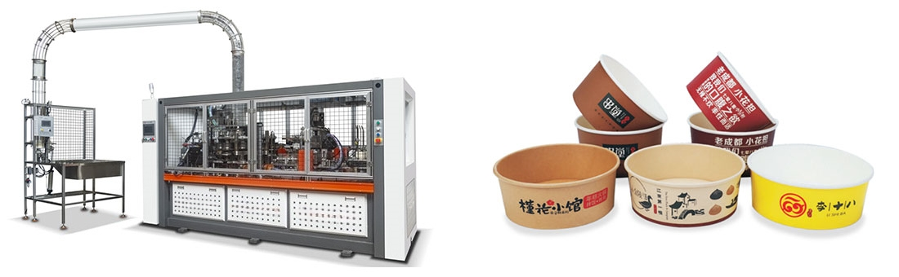

آلة وعاء السلطةهي عبارة عن معدات آلية تستخدم بشكل أساسي لإنتاج أوعية السلطة التي تستخدم لمرة واحدة. عادة ما يتم إنتاج هذه المعدات من قبل الشركات المصنعة مثل Jiangsu KIWL Machinery Manufacturing Group Co., Ltd، وتتميز بالكفاءة العالية وحماية البيئة. يبلغ عمق التشكيل لآلة وعاء السلطة 90 مم، ومساحة التشكيل 800 مم * 300 مم، ويمكن أن تصل سرعة العمل إلى 30-35 ثانية / دقيقة.
يمكن لآلة وعاء السلطة أن تنتج أوعية سلطة يمكن التخلص منها بسرعة وكفاءة من خلال التشغيل الآلي والميكانيكي. يتضمن مبدأ عملها التشكيل بالفراغ، والتشكيل بالضغط الساخن، وما إلى ذلك. وقد تشمل العملية المحددة تسخين المواد الخام البلاستيكية، وحقنها في القالب، والتبريد والتشكيل، وما إلى ذلك.
سيناريو التطبيق
تستخدم آلات وعاء السلطة على نطاق واسع في صناعة تقديم الطعام، وخاصة في صناعات الوجبات الجاهزة والوجبات السريعة. بسبب قدرتها الإنتاجية الفعالة وخصائص حماية البيئة،آلات وعاء السلطةيمكنها تلبية المتطلبات الكبيرة مع تقليل التأثير على البيئة.

آخر الأخبار
في السنوات الأخيرة، مع تطور تكنولوجيا الأتمتة والروبوتات، تم إدخال المزيد والمزيد من الروبوتات والمعدات الآلية في صناعة تقديم الطعام. على سبيل المثال، تخطط Salad Station في هيوستن بالولايات المتحدة الأمريكية لتركيب آلات بيع السلطة في المنطقة في السنوات القليلة المقبلة، حتى يتمكن العملاء من الحصول على السلطات الطازجة بمجرد النقر على زر. لا تعمل هذه المعدات الآلية على تحسين كفاءة الإنتاج فحسب، بل تعمل أيضًا على تغيير تجربة تناول الطعام للمستهلكين.
نحن نستخدم ملفات تعريف الارتباط لنقدم لك تجربة تصفح أفضل، وتحليل حركة مرور الموقع، وتخصيص المحتوى. باستخدام هذا الموقع، فإنك توافق على استخدامنا لملفات تعريف الارتباط.
سياسة الخصوصية